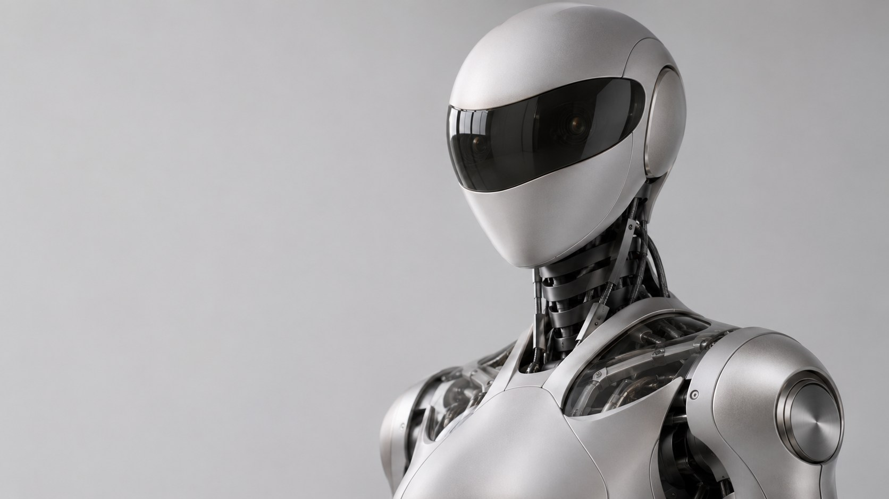
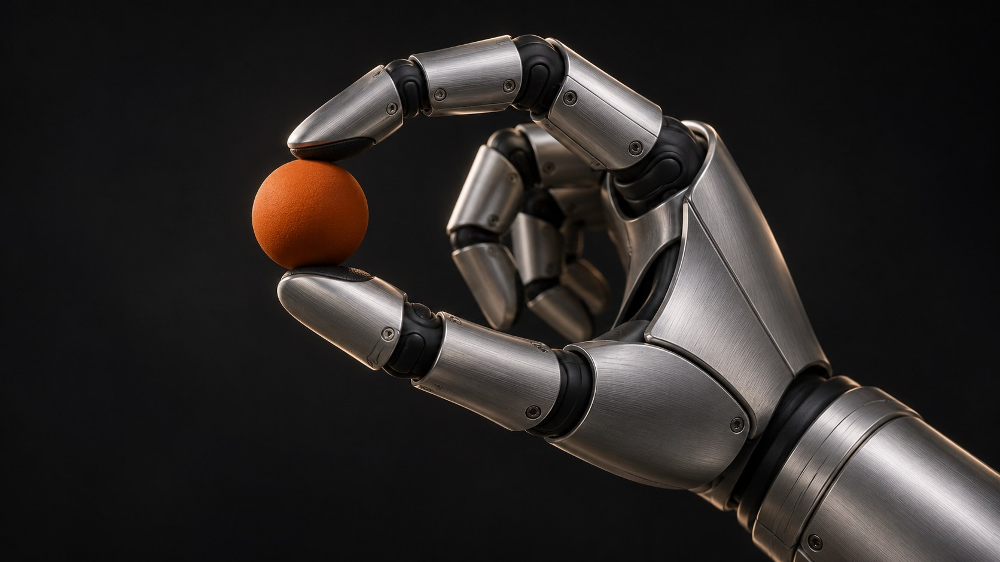

HUMANOID ROBOT整机视图
INDUSTRIAL DESIGN
近看，才见细节。
从连续的外壳曲面，到关节间的留白。
一道弧面，收拢目光。
深色面罩沿头部轮廓延伸，将视觉元件藏进一片连续的反光里。
让转动的结构可见。
颈部连杆与肩轴之间保留间隙，露出壳体之下彼此咬合的机械层次。
PHYSICAL INTERACTION
从一次轻触开始。
设想桌上有一颗小球。手指缓缓靠近，在相对的两个点合拢，
把它从桌面轻轻托起。


INDUSTRIAL DESIGN
从连续的外壳曲面，到关节间的留白。
深色面罩沿头部轮廓延伸，将视觉元件藏进一片连续的反光里。
颈部连杆与肩轴之间保留间隙，露出壳体之下彼此咬合的机械层次。
PHYSICAL INTERACTION
设想桌上有一颗小球。手指缓缓靠近，在相对的两个点合拢，
把它从桌面轻轻托起。
